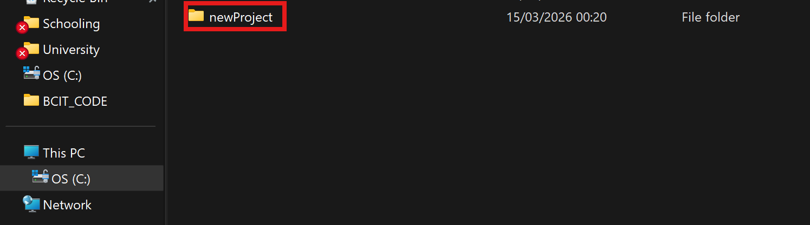
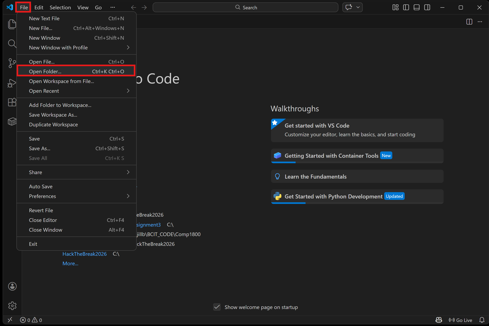
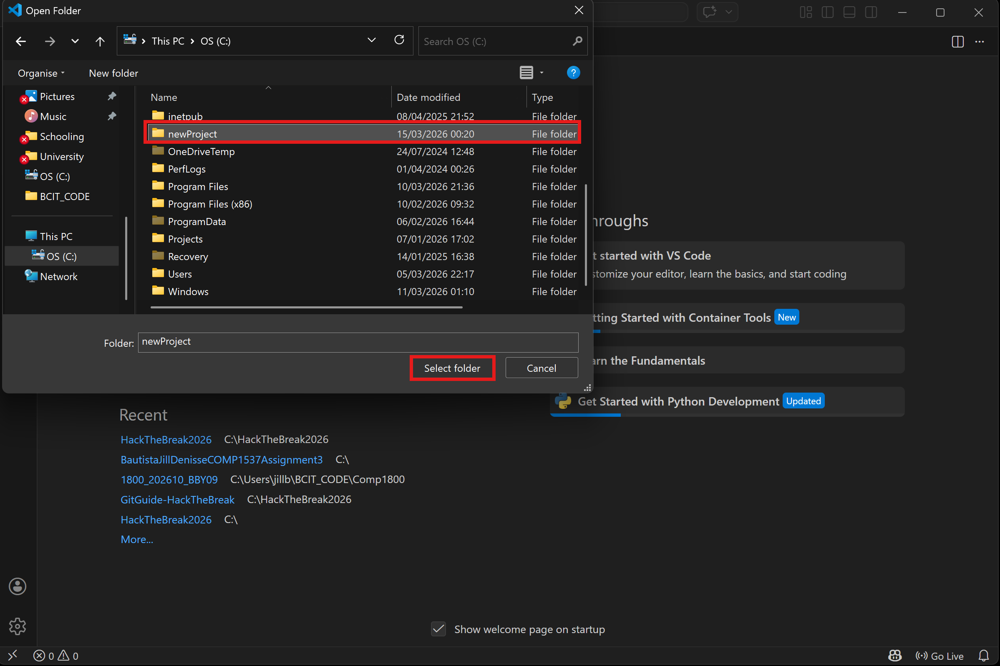
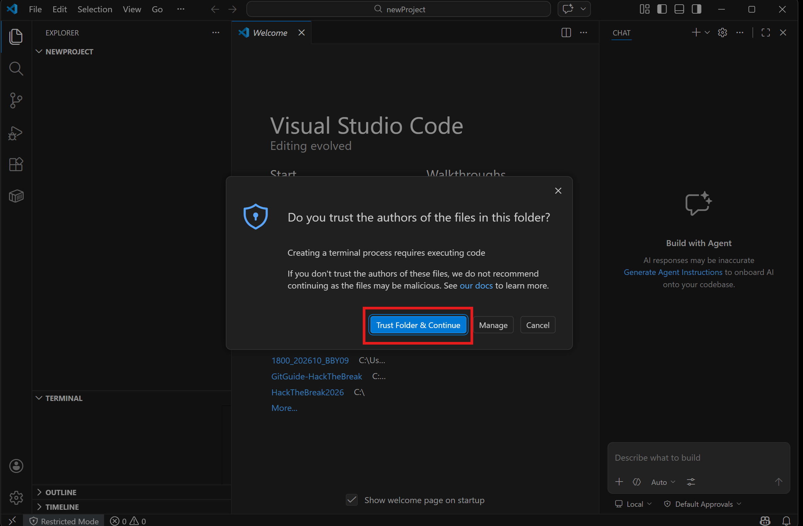

Step 1: Create a Prooject Folder
Create a new Folder on your Computer for your project.

Step 2: Open VS Code
Launch your VS Code to get started.

Step 3: Open the Folder in VS Code
In VS Code, go to "File" > "Open Folder" and select your new project folder. Hit Trust and continue and you're done!


